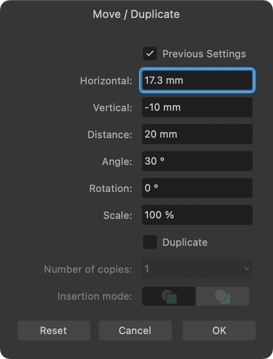

Objects can be positioned, sized, rotated or sheared on the page either 'by eye' or with absolute precision. Flipping operations are also possible.
Transforming is a general term to describe the repositioning, sizing (scaling), rotation, shearing or flipping of objects. Several choices are available:
"by eye": Using the Move Tool or by dragging control/rotation handles.
Move data entry: For accurate repositioning, rotating, scaling and duplicating of objects by dialog.
Transform panel: For accurate repositioning, resizing, rotating and shearing objects via panel.
You can also transform an object about a point on its own geometry, another object's geometry or a point on the page.
To position objects accurately:
Select one or more objects.
On the Transform panel, change X and/or Y values.
To nudge objects:
Select one or more objects.
Do one of the following:
For nudging by a single unit of measurement: Press an arrow key.
For 10x the single unit of measurement: Press an arrow key with the pressed.
To move, rotate or scale objects accurately (by Move data entry):
Select one or more objects.
Press the to display a Move / Duplicate dialog.

Enter new settings that will offset the object from its original position, with optional Angle, Rotation and Scale settings. Distance is the measurement between the original and moved object's centers.
The dialog also lets you duplicate the original object by a set number of copies.
Check Previous Settings if you want to retain and use the last used transformation values entered into the dialog; uncheck to transform with new values.
To size objects accurately:
Select one or more objects.
On the Transform panel, change W and/or H values.
To size objects to same:
Select multiple objects, ensuring the object to be sized to is selected first. To do this, use -click to target it first or a marquee selection that encompasses it first.
On the Toolbar, click Alignment, then set the Make Same option, choosing to size to Width or Height.
(Optional) Check Maintain Aspect Ratio to ensure the objects will resize using their original proportions.
Click Apply.
To size objects to a targeted key object:
Select multiple objects.
With the pressed, click the target object. The selected key object will possess a strong outline.
On the Toolbar, click Alignment, then set the Make Same option, choosing to size to Width or Height.
To flip or rotate objects:
Select one or more objects.
Do one of the following:
On the Toolbar, select a flip or rotate option.
From the Layer menu's Transform submenu, select a flip or rotate option.
To transform selected objects separately:
Select multiple objects.
With the Move Tool selected, select Transform Objects Separately from the context toolbar.
Transform any object.
To transform selected objects separately:
Select multiple objects.
With the Move Tool selected, select Transform Objects Separately from the context toolbar.
Transform any object.
To size selected objects separately to absolute sizes
Select multiple objects.
Ensure Transform Objects Separately is selected from the context toolbar.
On the Transform panel, resize by entering an absolute value into the W or H input boxes. For example enter =100px into the W box to make all objects 100px wide.
This absolute sizing is in contrast to scaling other objects in your selection proportionately to a targeted key object resized to, e.g. 100px. Note the importance of the "=" symbol to signify an expression being used.
Scale override
When an object is resized, the stroke width, layer effect radii, corner radii and text frame contents can be forced to scale by using the Transform panel. If Scale with object settings are unchecked on the object itself (stroke, layer effect, etc.) then they will be ignored.
To override scaling on objects:
Select an object.
On the Transform panel, enable Scale Override.
Resize via the object's handles with the pressed.
To override scaling on objects selectively:
Select an object.
On the Transform panel, click the Scale Override down arrow to check/uncheck the following settings:
Line weights—useful when working on vector objects with a stroke. For example, you can either force or prevent scaling while resizing with the setting set to Scale with object or Locked, respectively.
Shape corners—to control the scaling of a shape's corners while resizing, you can either force (Scale with object) or prevent (Locked setting).
Layer effect radii—to control the scaling of the radius of a layer effect added to an object.
Text frame contents—to control the scaling of frame text while resizing; when set to Locked the container will scale while keeping text the same size. When set to Scale with object however, text will enlarge when resizing the container by its corner handles.